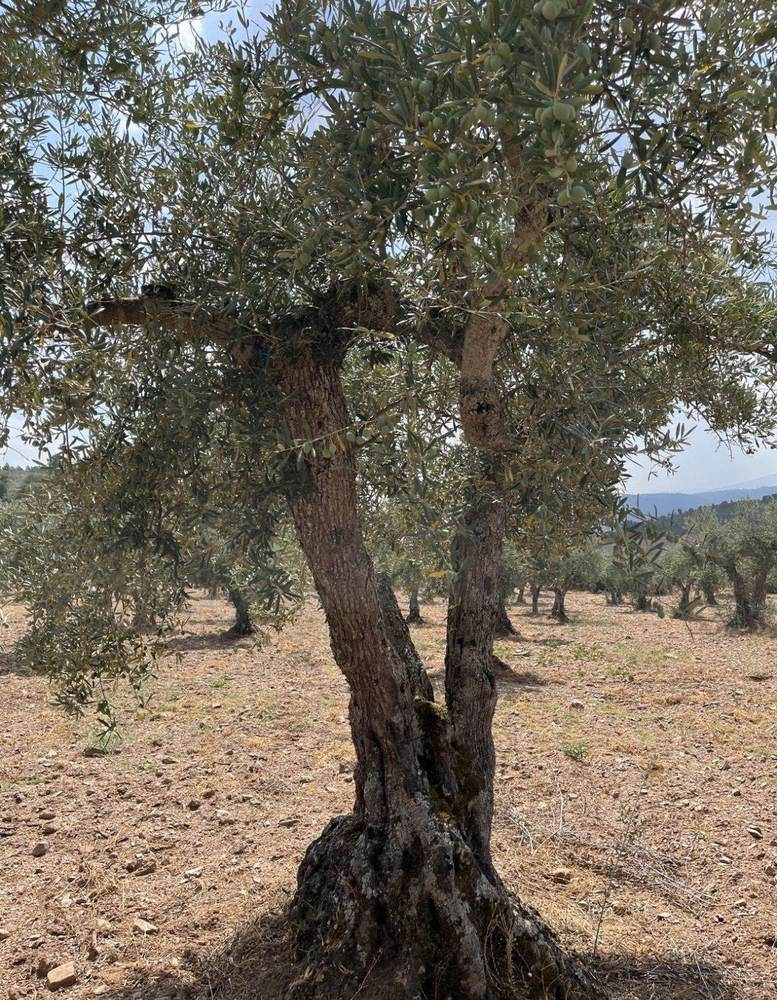
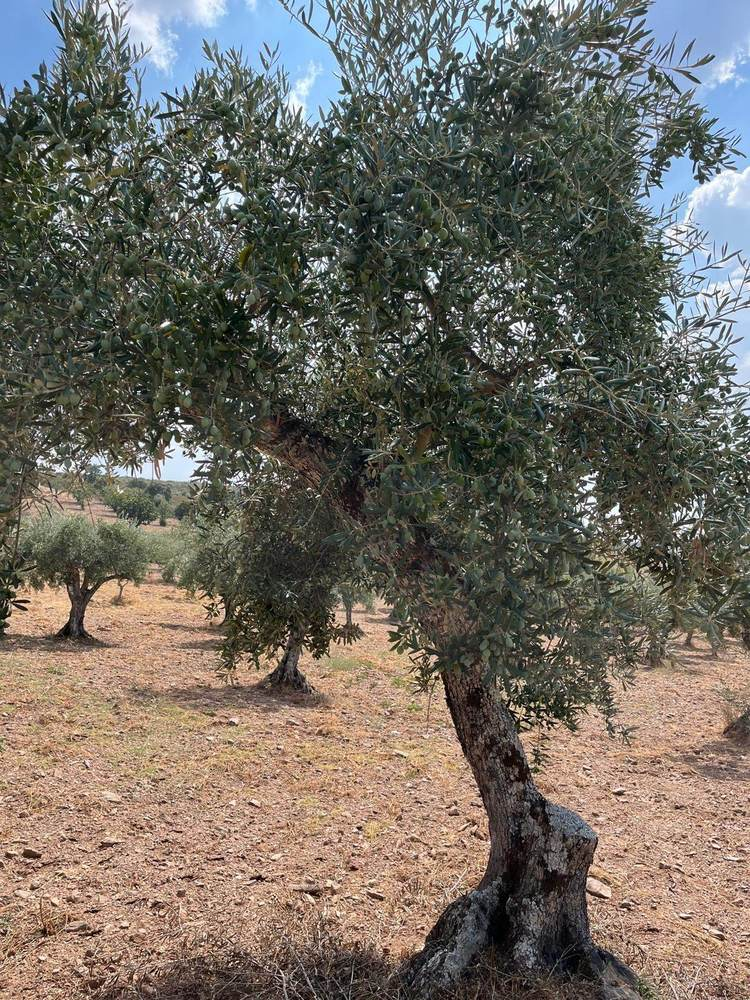
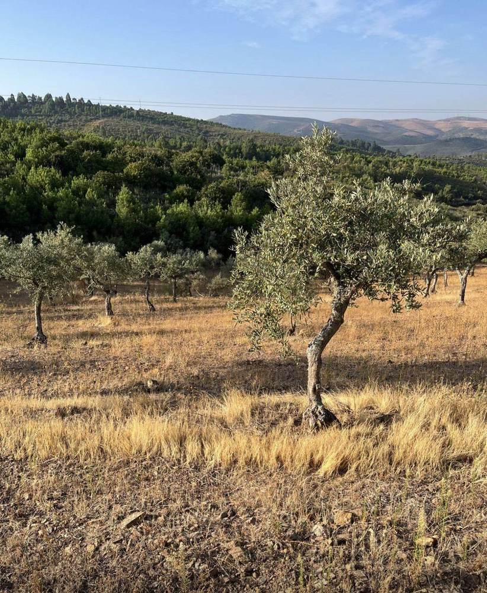
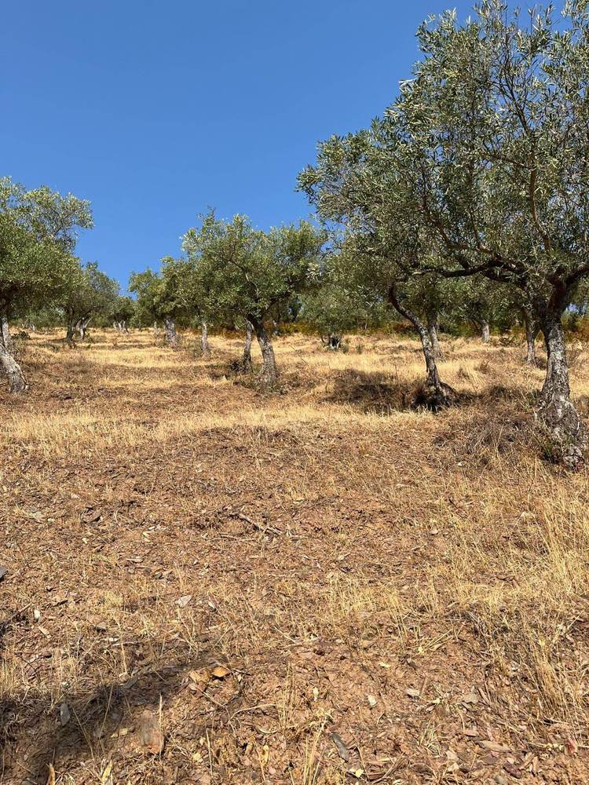
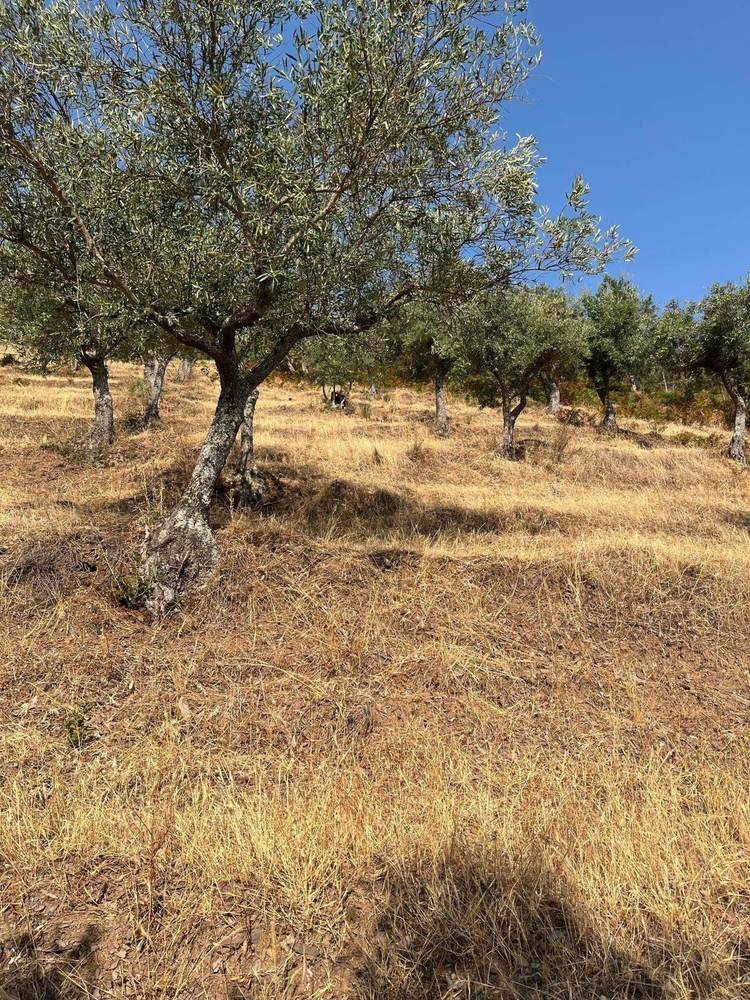
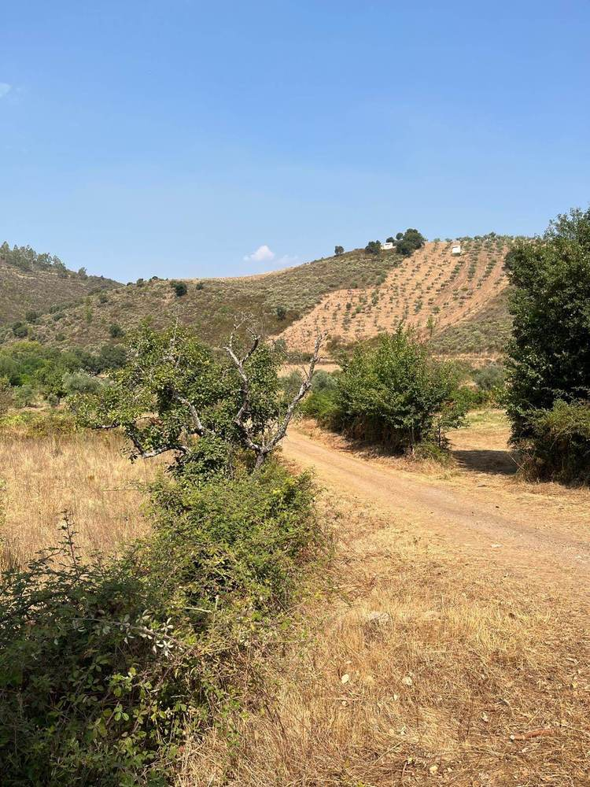
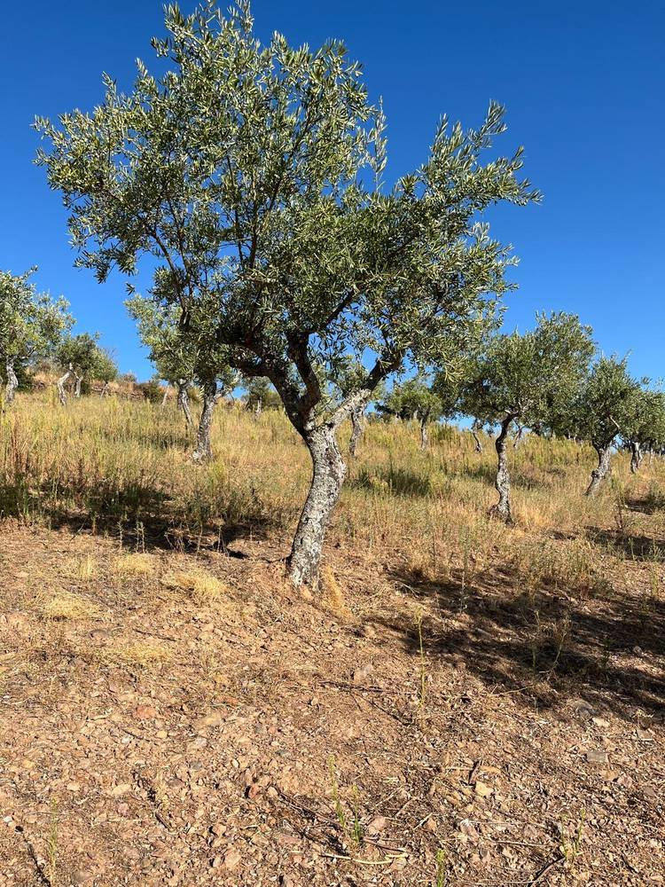
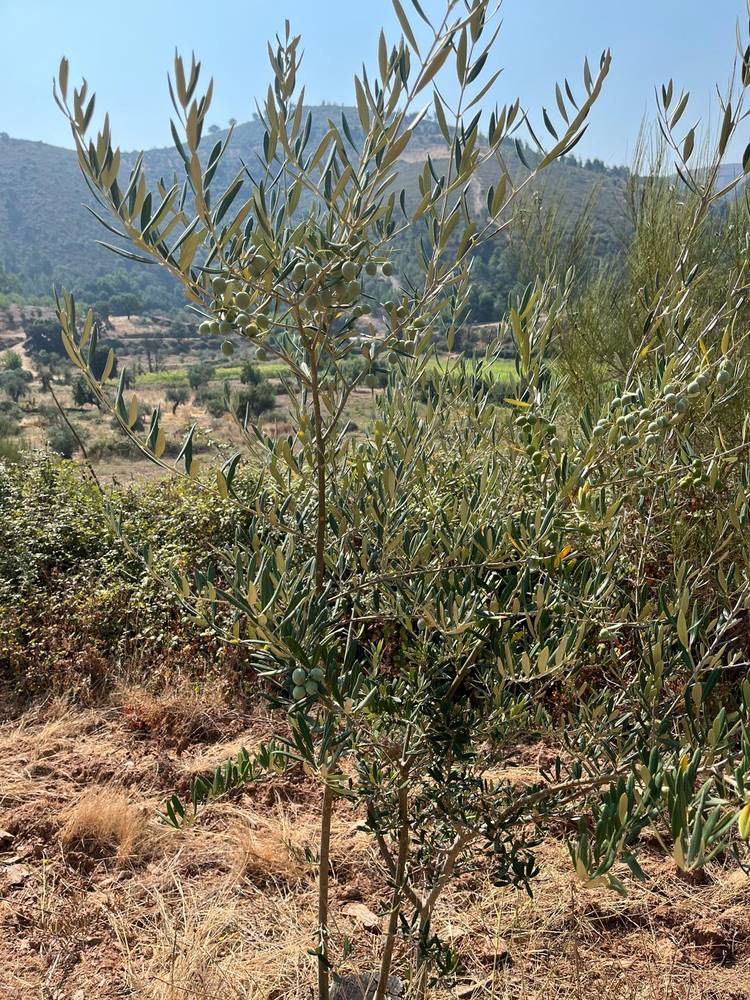
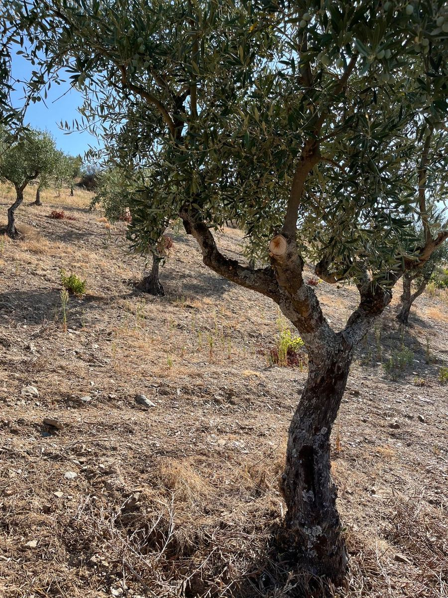
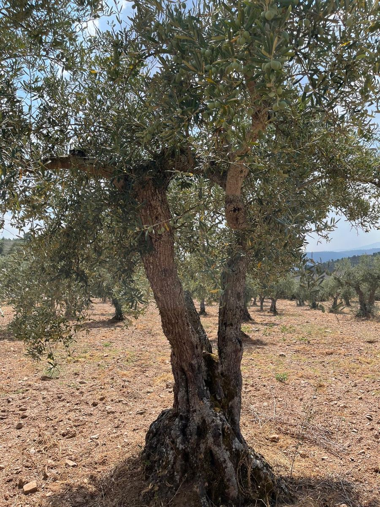

Fotografias tiradas no nosso olival em Trás-os-Montes, na Terra Fria Transmontana — as mesmas oliveiras e encostas de onde vem o azeite Zirbo.








O nosso olival foi plantado há mais de 50 anos pelo avô da família — árvore a árvore, encosta acima. Não é um investimento recente nem um projeto de marca: é terra que já passou por três gerações.
Entre 2010 e 2012, os incêndios que percorreram Trás-os-Montes destruíram mais de metade do olival. Não foi opção nem gestão — foi perda, sem mais.
Mas as árvores que sobreviveram voltaram a rebentar da raiz. Nos anos seguintes, foram vingando — teimosas, resistentes.
É delas, e das fileiras mais novas replantadas depois para as substituir, que vem hoje o azeite Zirbo.
Zirbo é uma marca portuguesa dedicada à comercialização de azeite virgem extra premium, com foco na Terra Fria Transmontana. É um projeto em fase de lançamento — o primeiro lote é piloto: 1.000 latas de 500 ml, produzidas em regime de marca própria junto de um lagar parceiro certificado na região.
A nossa missão é simples: honrar o terroir de Trás-os-Montes com um produto rastreável, de produção limitada, e ser honestos sobre o que ainda está por confirmar — desde a ficha técnica final do lote até ao registo legal da marca.
Mantemos um compromisso contínuo com a qualidade, para os futuros clientes e para a própria região que nos inspira.
Para conhecer a história por trás do nome, da região e do produto, visite as páginas A História do Azeite, Trás-os-Montes e O Azeite na Região.
O nosso olival trabalha-se como sempre se trabalhou nesta região: em regime de sequeiro, sem rega forçada, deixando que seja o solo de xisto — e as estações — a ditar o ritmo. É essa resistência, mais do que qualquer intervenção, que dá caráter à azeitona.
A poda faz-se no inverno, depois da colheita e antes do arranque da nova vegetação — sempre à mão. O objetivo não é só controlar o tamanho da árvore: é abrir a copa em forma de taça, deixando entrar luz e ar até ao centro, para que a azeitona amadureça de forma uniforme em toda a árvore, e não só nas pontas.

Não há pressa nem máquina que substitua este trabalho. É repetido árvore a árvore, todos os invernos, há gerações — e é esse cuidado, mais do que qualquer técnica nova, que mantém produtivas as árvores que resistiram ao fogo.

Fora da época da poda e da colheita, a intervenção é mínima: sem regas artificiais, sem adubação intensiva, sem herbicidas de largo espectro. A erva cresce e seca naturalmente ao longo do ano, protegendo o solo da erosão nas encostas mais inclinadas. É um cultivo que exige paciência — e que está, de alguma forma, em cada gota de Zirbo.